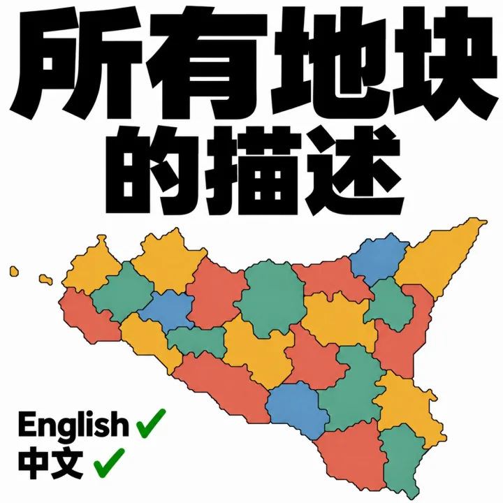
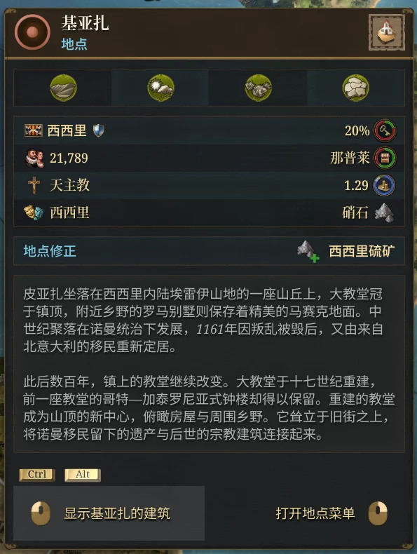
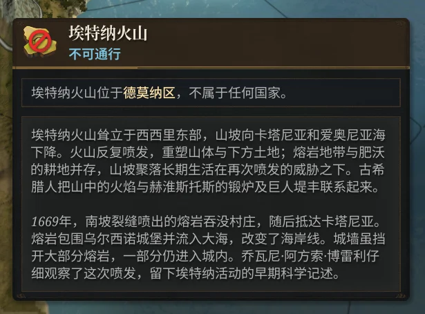
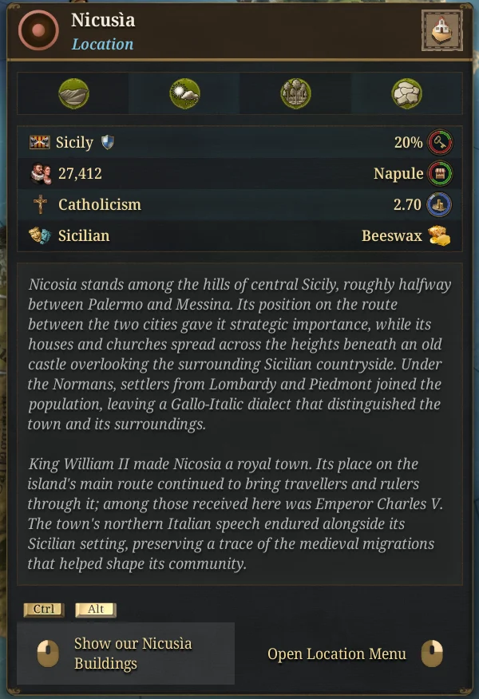
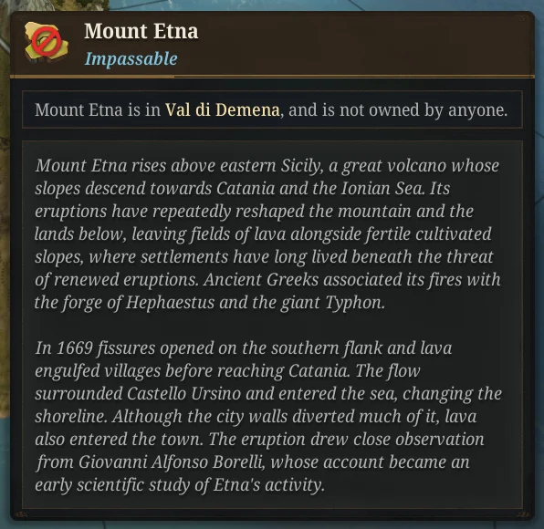

所有地块的描述
《欧陆风云5》模组 · Descriptions for Every Tile
《欧陆风云5》的地图有 28,573 个地块，官方只给其中 257 个写了介绍。其余地块把鼠标移上去，只能看到地形、人口和物产。
我给剩下的 28,316 个地块各写了一段英文和简体中文介绍：城镇、乡村、山脉、湖泊、海域，一个不落。2026 年 10 月 31 日上架 Steam 创意工坊，第二天订阅就过了 700。
在 Steam 创意工坊订阅
28,316个地块新增介绍
中 / 英两种语言分别写成
257条官方介绍原样保留
3,000+Steam 创意工坊订阅
游戏里的样子




怎么写的
- 每条介绍都从当地语言的资料出发，主要是维基百科，也有地方政府、文保机构和学术网站。每个词条都记下了出处，随模组一起发布。
- 文风对照官方自带的介绍：先讲这是个什么样的地方，再讲游戏年代（1337—1837 年）里发生的事，不写 1837 年以后。
- 游戏开局时城镇级以上的 923 个城市逐条核对过事实。乡村、山地和海域这类小地块资料少，就写得短一些，不硬凑。
- 中文和英文分别写成通顺的文字，不逐句翻译。前后用当时最好的几个模型修了很多轮，花了不少 token。
- 官方已经写了介绍的 257 个地点不覆盖，保留原文。
上架之后
玩家在创意工坊评论区、Reddit 和 B 站指出的错误，我会尽快查资料修掉。比如萨尔河畔 Wallerfangen 出产的那种蓝色颜料，英文应写作 Wallerfanger blue；无锡“锡矿采尽，故名无锡”其实是后人的附会，现在只当传说来讲。到 11 月 1 日已经更新到 1.0.4。
模组只加介绍文字，并让海域和无法通行的地块也能显示介绍，不改玩法。可以中途加入已有存档，单人游戏照常能拿成就；联机时房主和玩家都要装上它。
我自己就是这个模组最大的用户，会一直维护下去。发现写错了，欢迎在创意工坊页面留言。
Steam 创意工坊条目 3830305546 · 当前版本 1.1.0 · 订阅数截至 2026 年 11 月 12 日